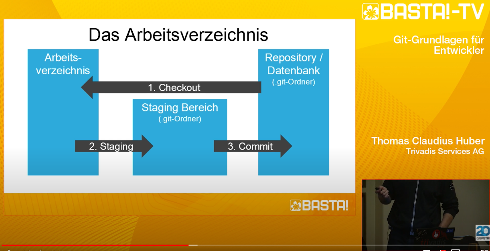
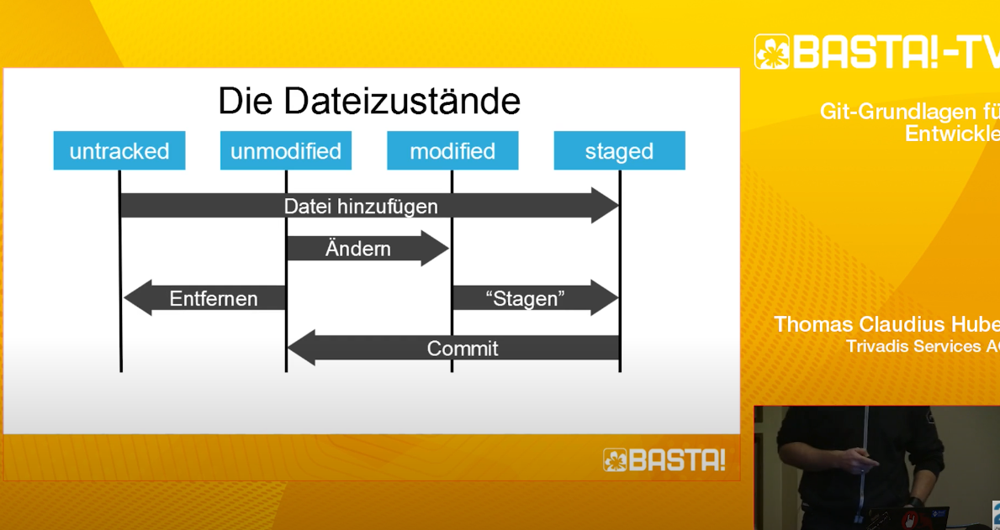

GIT Book
Book of GIT
GIT Basics
Repositories
these are the containers for your projects
- local repository
- remote repository
Quellen
git scm docs
GIT Basiseinstellungen
GIT global user name and email
git config --global user.name "Your Name Comes Here"
git config --global user.email you@yourdomain.example.com
these are just used to show remember who does the commit
wichtigste GIT Befehle
Git Initialisieren
terminal -> cd ... zum Betreffenden Ordner..
git init .
Den gesamten Ordner ins Git Verzeichnis bringen
ls -a
check for hidden files -> check if there is a .git folder
git status
den aktuellen Status anschauen -> welche Änderungen habe ich gemacht welche noch nicht "repositioniert" sind
git status -s
kurze status Abfrage
git add .
durch . werden alle Dateien im Repository werden in der aktuellen Git-Version gestaged(hinzugefügt),
-> die Änderungen sind somit breit zum commiten
git add *fileName*
die genannte Datei im Repository wird in der aktuellen Git-Version gestaged(hinzugefügt),
-> die Änderungen sind somit breit zum commiten
git commit -m "*insert comment on this commit, must have!*"
git commit erstellen mit (-m essage) Änderungscommentar angeben
Alternatively, instead of running git add beforehand, you can use
git commit -a
which will automatically notice any modified (but not new) files, add them to the index, and commit, all in one step.
git diff
alle Änderungen welche noch nicht gestaged sind anzeigen
git diff --cached
Git Änderungen Verwerfen
git checkout allesNeu.html
Die aktuellen Änderungen in der Datei "allesNeu.html" zurücksetzen
Git Commit Verlauf
git log
Commit Verlauf anzeigen
Git help / user's manuel
man git-*
* stands for any git command
man git-log
shows the manuel for git log
Using the remote repository
git push origin master
git ask for the credentials (of github)
resolving merge conflict
https://www.youtube.com/watch?v=JtIX3HJKwfo
GIT Remotes - The Coding Train
Resolving Merge Conflicts
How to set up other Text editor
GOOG TO KNOW
press q when ((END)) blocks the terminal
USING VIM (VI) for GIT changes
:i
--INSERT-- shows up end of the line
ESC + :wq
git config --global core.editor "code --wait"
set up Visual Studio Code as Commit Text Editor // set code (VS Code to PATH!!!)
git config --global core.editor "vim"
setting up vim as (terminal) editor better way as standart
git config --global core.editor vi
default on my mac
Zusammenfassung using VIM
If you haven't change the default git's editor, that "new view" is the Vi program.
To save your commit message using Vi, follow the next steps:
- Type
i
- Write your message
- Type the
ESC key
- Type
:wq
- DONE! :D
Typing :q, step 4, is not enough beacuse just means QUIT without saving. That's why you need :wq, which means WRITE and QUIT.
You can write your commit message using your favourite editor(vim, emacs, etc.). To achieve this, you can use configuration parameter or environment variables, listed in order:
- GIT_EDITOR environment variable
- core.editor configuration option
- VISUAL environment variable
- EDITOR environment variable
Using the configuration option type something like this:
$git config --global core.editor "nano"
Or if you want to use enviroment variables, add something like this to your .bash_profile
$export GIT_EDITOR="PATH/TO/YOUR/EDITOR"
Writing good COMMIT messages
A commit message should answer three primary questions:
Why is this change necessary?
How does this commit address the issue?
What effects does this change have?
edit git commit
git commit --amend -m "Fixed bug" -m "Closes #issue"
Edit a commit
Check your GIT Settings
git config --list
git config -l
git config -l --show-origin
file:/usr/local/git/etc/gitconfig
in diesem file werden die Einstellungen gespeichert
You can also check what Git thinks a specific key’s value is by typing git config :
$ git config user.name
GIT Grundlagen Video (Notizen)
Git-Grundlagen für Entwickler - Alles was man zum Einstieg wissen muss
git config --global core.editor notepad
choose notepad text editor (microsoft version) for edit commit message
Das Arbeitsverzeichnis
Aufbau:
Arbeitsbereich (der Projektordner (mit .git Repository))
Staging Bereich (.git-Ordner)
Repository/Datenbank (.git)

das Arbeitsverzeichnis
- Checkout
- Staging
- Commit
Dateizustände
- untracked
- unmodified
- modified
- staged

git status
wenn text rot -> nicht in der Staging area
wenn text grün in der staging area-> fertig für den commit
weitere nützliche Befehle
- Datei entfernen
git rm dateiname.txt
- Diff anzeigen
git diff
-> vergleicht Arbeitsverzeichnis mit dem Repository!
nach:
git add .
sind keine Änderungen mehr sichtbar
Dateien vergleichen vom Arbeitsbereich zu aktuellen Commit geht mit
git diff --staged
- Diff in Tool anzeigen
git difftool
Datei entfernen
"working tree clean" entspricht dem Arbeitsverzeichnis (welches leer ist)
- Zeigt commits an (mit Snapshot-Hash SHA1)
git log
schönere Darstellung
git log --pretty=oneline
nochmal zu einem bestimmten Zeitpunkt des Code springen
git checkout 1f7a6
ersten 5 Zeichen vom Hash kopieren
"you are in 'detached Head' state ... "